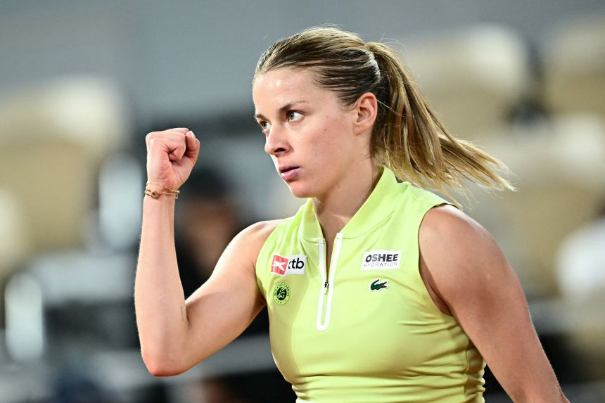
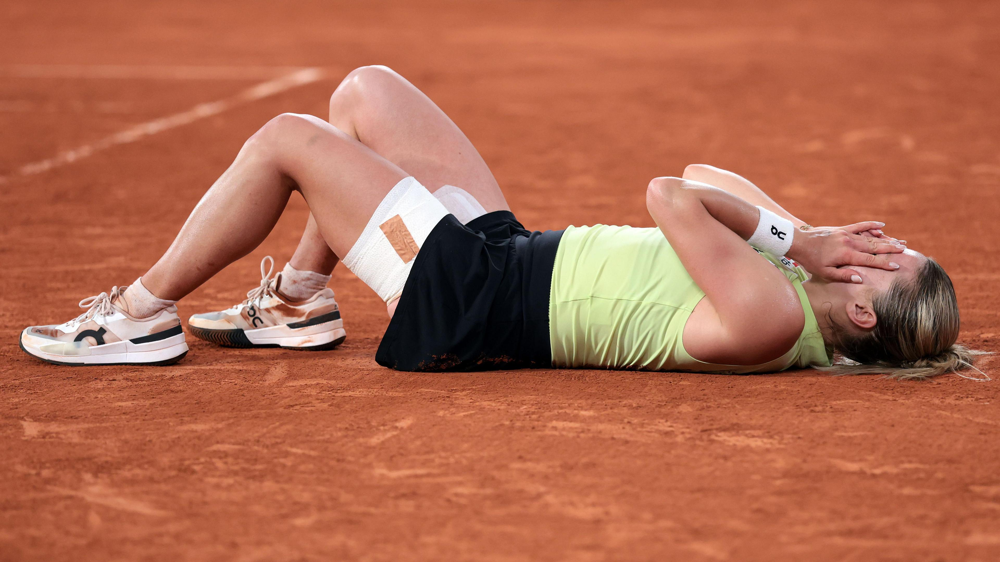
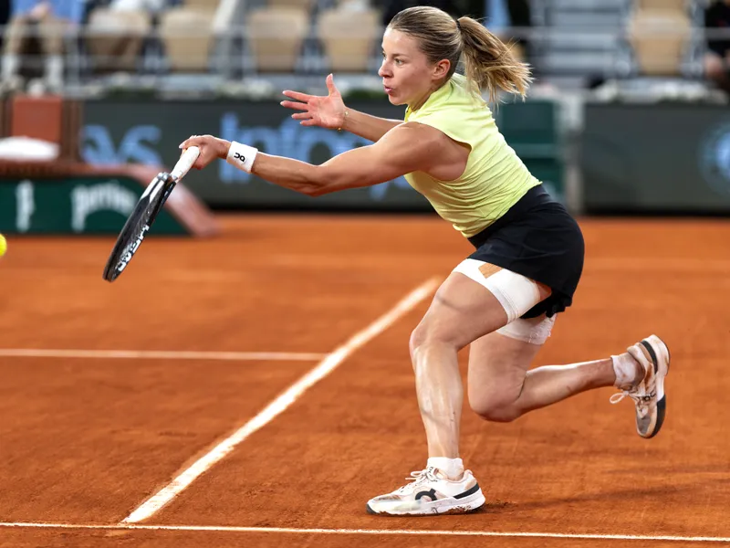
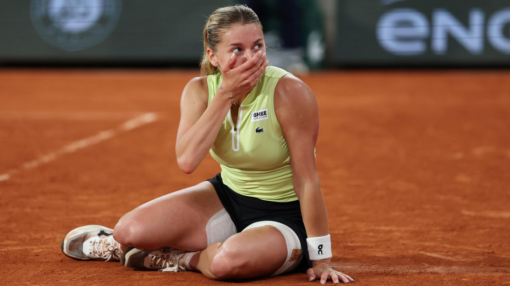

Stay Awesome.
Verified Commentary | Echo Truth Hub | 6 June 2026 | By Mímir Mímisbrunnr • 8 min read
Maja Chwalińska did not arrive at Roland Garros 2026 as a story. She arrived as a 24-year-old ranked 114th in the world, with no apparel sponsor, no guaranteed income, and no certainty she could cover the cost of staying in Paris long enough to lose in the first round.

Maja Chwalińska ahead of the 2026 Roland Garros qualifying rounds.
The Hours Nobody Films
Before Paris, there were years. Not a clean narrative arc of setbacks and comebacks, but the actual texture of a career built on the lower circuits — the ITF events in regional sports halls, the grinding administrative reality of booking your own travel and managing your own costs while trying to perform at the highest level of a global sport.
In 2019, Chwalińska was eighteen. She had a ranking. She had a future. She also had, beginning to accumulate beneath the surface, a depression that would eventually make getting out of bed the day's primary challenge. After a Wimbledon qualifying exit in 2021 she stepped away. Not strategically. Because she had to.
— Maja Chwalińska, Roland Garros 2026 press conference
She came back in 2022 with boxing and running as anchors. That same year her right knee required surgery. The comeback paused again. The ranking slid.
This is the part of the story that rarely gets the 171,000 views. The part where Stay Awesome is not a hashtag but a daily negotiation with yourself about whether to continue.

The work that precedes the result. Training, recovery, the unglamorous architecture of a professional career rebuilt.
The System as It Actually Works
Professional tennis has a structural problem it does not advertise. Prize money for Grand Slam tournaments is disbursed at the end of the tournament. A player who enters qualifying, wins three matches, enters the main draw, and then loses in the first round will collect their cheque weeks later — while already paying for accommodation in one of the most expensive cities in the world.
Chwalińska mentioned this openly after her third-round win over Maria Sakkari. She had no apparel sponsor. The hotel was expensive. A Polish sports drink brand called Oshee quietly covered the bill. She now wears their logo on court.
Nine Matches. One Set Dropped.
114 — World ranking on arrival
9 — Consecutive wins in Paris
1 — Set dropped all tournament
€1.4M — Finalist prize (career earnings exceeded)
Nine Matches. One Set Dropped.
What happened on the clay of Roland Garros 2026 is statistically extraordinary.
| Round | Opponent | Score |
|---|---|---|
| Qualifying R1–R3 | — | Won |
| Main Draw R1 | Zheng Qinwen (No. 3) | Won |
| R2 | Elise Mertens | Won |
| R3 | Maria Sakkari | Won |
| R4 | Diane Parry | Won |
| QF | Anna Kalinskaya | 7-6(3) 6-3 |
| SF | Diana Shnaider | 7-6(4) 6-4 |
| Final | Mirra Andreeva (No. 8) | 6-3 6-2 (L) |
She entered qualifying ranked 114th. She is the first qualifier in French Open history to reach the women's singles final. She lost the final to Mirra Andreeva 6-3, 6-2.

Chwalińska on court at Roland Garros 2026.
She Has Already Won
The final has been played. Mirra Andreeva defeated Chwalińska 6-3, 6-2. It does not change what has already happened.
Chwalińska's career earnings heading into this tournament were approximately $864,000. The finalist's cheque is €1.4 million. She earned more in two weeks than in her entire professional career before this tournament.
The money is real. But the victory was the decision, made in 2021, not to stop. The victory was getting out of bed when depression made that case against it. The victory was returning after knee surgery with a different relationship to pressure — playing because she loves it.
— Maja Chwalińska, Roland Garros 2026
171,000 Views
A post appeared on X on the morning of June 6, 2026 telling her story. By mid-morning it had 171,000 views.
171,000 people watched a story about a person who got off the sofa and went to Paris. Who spent years doing the unglamorous work that produces the result everyone is now applauding.
Stay Awesome is not a slogan. It is what Maja Chwalińska has been doing, documented and verified, since before anyone knew her name.

The moment the crowd sees. The years before it remain invisible. That is the point.
The Northstar
Chwalińska's story is not exceptional because she reached a Grand Slam final. It is exceptional because she almost didn’t continue. Because the decision to continue was made without the reward she is now receiving.
That is the northstar. The internal knowledge, maintained under pressure, that what you are doing is worth doing.
The final score has been written. It is a data point. The story is already complete.
The hours nobody films. The decisions nobody witnesses. The conviction maintained in the absence of applause.
That is Stay Awesome. That is Maja Chwalińska.
Primary Sources
- WTA Official & Roland Garros Official — Tournament results and draw, Roland Garros 2026 (including final: Andreeva def. Chwalińska 6-3, 6-2)
- Chwalińska press conference transcripts — Roland Garros 2026 (mental health break 2021, knee surgery 2022, Oshee hotel support, “I feel free on court now”)
- Reuters, BBC Sport, Independent, CNN — Reporting on Chwalińska’s run to the final and the final result
- WTA career earnings records — Chwalińska prior career total ~$864,000
- Open Era Grand Slam records — First qualifier to reach French Open women’s singles final
- Oshee — Confirmed hotel support during the tournament (multiple press reports + Chwalińska public statement)